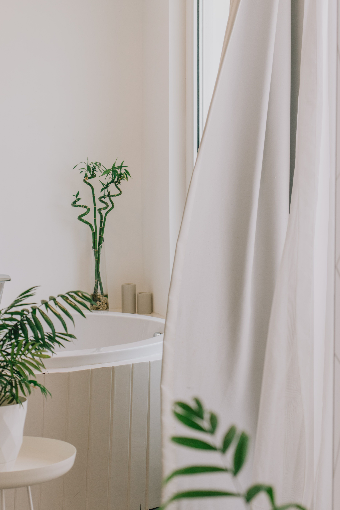
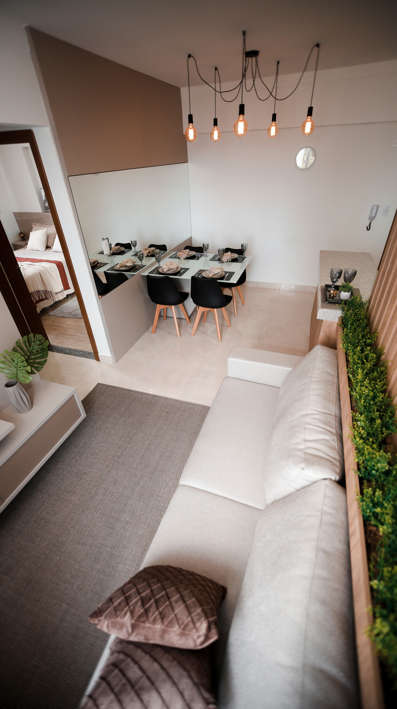
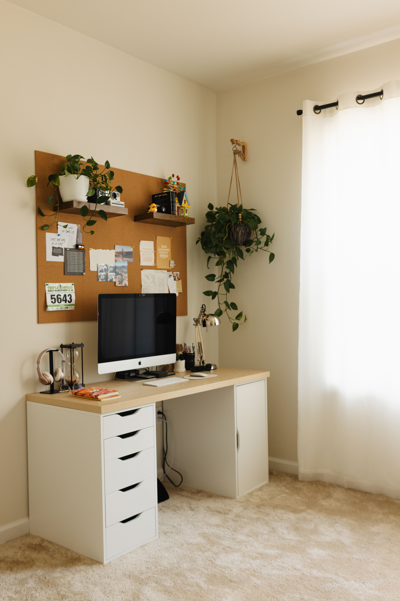

En este artículo
Introducción
Aprende a planificar un jardín con interés durante todo el año combinando estructura, floraciones, follaje, frutos y tareas estacionales.
La falta de espacio no siempre se resuelve añadiendo muebles. Muchas veces el cambio más importante consiste en reducir duplicados, acercar cada categoría a la tarea correspondiente y aprovechar la altura sin bloquear recorridos ni accesos técnicos.
En esta guía encontrarás un proceso completo para revisar, clasificar, almacenar y mantener el espacio. La prioridad es que el resultado sea seguro, fácil de utilizar y sostenible en el tiempo, no únicamente que se vea ordenado durante un día.
Antes de perforar paredes, modificar instalaciones o colocar cargas elevadas, comprueba el tipo de soporte, las instrucciones del fabricante y las condiciones de seguridad. Cuando exista duda sobre electricidad, estructura o equipos, recurre a un profesional cualificado.
Observa el jardín durante todo el año antes de decidir
Un jardín atractivo durante todo el año no depende de tener flores permanentemente. La clave está en combinar estructura, follaje, corteza, frutos, semillas y floraciones que aparecen en momentos diferentes. Antes de comprar plantas, observa cómo cambia el espacio.
Registra horas de sol en distintas estaciones. Un rincón soleado en verano puede recibir sombra en invierno por la posición del sol o por edificios. Esta información ayuda a elegir especies compatibles con las condiciones reales.
Observa también el agua. Identifica zonas que permanecen húmedas después de lluvia y otras que se secan rápido. El drenaje y la disponibilidad de riego condicionan qué plantas prosperarán con menos intervención.
Anota desde qué lugares ves el jardín con mayor frecuencia. En invierno quizá lo observes principalmente desde una ventana. Colocar estructura, perennes o elementos interesantes en esas vistas mantiene atractivo cuando utilizas menos el exterior.
Considera el clima local, no un calendario genérico. Las estaciones se comportan de manera distinta según región, altitud y exposición. Utiliza información de viveros y servicios de extensión o jardinería locales.
Revisa plantas existentes antes de sustituirlas. Un arbusto que parece poco interesante en primavera puede producir color otoñal o frutos en invierno. Conocer el ciclo completo evita eliminar elementos valiosos.
Define cuánto mantenimiento puedes asumir. Un jardín de cuatro estaciones debe ser sostenible para quien lo cuida. Elegir demasiadas especies exigentes puede convertir la variedad en una carga.
Consejos para aplicar esta primera revisión
Aplica esta parte de la organización de manera gradual y comprueba que cada decisión simplifique el uso cotidiano. Si una solución añade pasos, bloquea un acceso o exige más mantenimiento del que puedes asumir, conviene modificarla antes de continuar.
Combina plantas con distintos momentos de interés
Crea una lista de plantas que aporten interés en primavera, verano, otoño e invierno. No necesitas la misma cantidad en cada estación, pero sí evitar que todo florezca durante unas pocas semanas.
En primavera, bulbos, arbustos florales y brotes nuevos aportan color temprano. Combínalos con plantas que todavía mantienen estructura para que el jardín no dependa únicamente de flores pequeñas.

El verano ofrece muchas opciones de floración. Prioriza especies adaptadas al calor y al régimen de agua disponible. Agrupar plantas con necesidades similares simplifica el riego.
En otoño, el follaje puede convertirse en protagonista. Árboles y arbustos con cambios de color, gramíneas y cabezas de semillas prolongan interés después de la floración.
En invierno, las plantas perennes, cortezas decorativas, ramas con forma atractiva y algunos frutos mantienen presencia. No cortes automáticamente todas las plantas secas si sus estructuras siguen siendo decorativas y saludables.
Las plantas con bayas pueden aportar alimento para fauna, pero investiga toxicidad si hay niños o mascotas y evita especies invasoras. Selecciona especies apropiadas para tu región.
Repetir algunas plantas en distintos macizos crea continuidad. La variedad no significa utilizar una especie diferente en cada metro. Una paleta coherente resulta más fácil de mantener.
Cómo adaptar esta organización a tu espacio
Aplica esta parte de la organización de manera gradual y comprueba que cada decisión simplifique el uso cotidiano. Si una solución añade pasos, bloquea un acceso o exige más mantenimiento del que puedes asumir, conviene modificarla antes de continuar.
Construye una estructura que funcione incluso sin flores
Los árboles y arbustos forman el esqueleto del jardín. Su volumen permanece cuando las herbáceas desaparecen o se reducen. Elige tamaños adultos compatibles con el espacio para evitar podas constantes.
Los setos, cercas, caminos y bordes también aportan estructura. Un recorrido claro y macizos bien definidos mantienen orden visual incluso en meses con menos vegetación.
Las plantas perennes de hoja persistente pueden distribuirse en puntos estratégicos. No es necesario que dominen todo el jardín; unas masas bien colocadas ofrecen anclajes durante el invierno.
Las gramíneas ornamentales pueden aportar movimiento y textura. Algunas conservan sus espigas secas durante meses. Conoce su comportamiento y evita especies invasoras.
Las macetas permiten introducir color estacional cerca de entradas o terrazas. Utilízalas como complemento, no como única fuente de interés, porque requieren riego y renovación.
Elementos como bancos, fuentes o esculturas pueden crear puntos focales, pero deben integrarse con el estilo y el tamaño. Demasiados objetos compiten con las plantas.
Un jardín estructurado facilita realizar cambios pequeños cada temporada sin perder coherencia. La base permanece y las floraciones actúan como capas temporales.
Seguridad y aprovechamiento práctico
Aplica esta parte de la organización de manera gradual y comprueba que cada decisión simplifique el uso cotidiano. Si una solución añade pasos, bloquea un acceso o exige más mantenimiento del que puedes asumir, conviene modificarla antes de continuar.

Crea un calendario estacional de plantación y mantenimiento
Crea un calendario sencillo con cuatro columnas: plantar, podar, dividir y revisar. Añade las especies existentes y consulta la época adecuada para cada una. Esto evita intentar hacer todo en un único fin de semana.
Planifica compras antes de visitar el vivero. Lleva medidas, fotografías y una lista de condiciones. Comprar solo por la flor del momento suele producir un jardín concentrado en una estación.
Introduce plantas gradualmente. Observar cómo responden durante un año completo aporta información para la siguiente fase. No es necesario llenar todos los huecos inmediatamente.
Utiliza acolchado cuando sea apropiado para conservar humedad y reducir hierbas no deseadas. Mantén el material separado de troncos y coronas sensibles.
Revisa el riego al cambiar de estación. Las necesidades de agua varían con temperatura, lluvia y crecimiento. Un programa automático no debe permanecer igual todo el año.
Deja algunas tareas para el momento adecuado. Muchas podas dependen de la especie y de cuándo florece. Podar en una fecha incorrecta puede eliminar botones florales o debilitar plantas.
Al final de cada estación, toma fotografías desde los mismos puntos y anota huecos. Después de un año tendrás un mapa visual muy útil para mejorar el jardín sin improvisar.
Cómo mantener el resultado a largo plazo
Aplica esta parte de la organización de manera gradual y comprueba que cada decisión simplifique el uso cotidiano. Si una solución añade pasos, bloquea un acceso o exige más mantenimiento del que puedes asumir, conviene modificarla antes de continuar.
Cómo conservar la organización con el paso del tiempo
Antes de dar por terminado el proceso, conviene probar el nuevo sistema durante varios días. La organización real se demuestra cuando puedes realizar las tareas habituales sin tener que mover objetos innecesariamente, buscar durante minutos o dejar cosas fuera porque guardarlas resulta incómodo.
También es útil tomar una fotografía del espacio ya organizado. No se trata de perseguir una apariencia perfecta, sino de disponer de una referencia que permita detectar qué categorías empiezan a crecer o qué zonas dejan de funcionar con el paso del tiempo.
Cuando compres un nuevo objeto relacionado con este espacio, decide dónde se guardará antes de incorporarlo. Esta sencilla regla evita que las mejoras desaparezcan por acumulación y obliga a revisar si realmente existe capacidad disponible.
Los sistemas más duraderos suelen utilizar menos recipientes y categorías más claras. Una caja grande bien definida puede funcionar mejor que cinco organizadores pequeños si todos contienen objetos que se usan juntos.
Si varias personas utilizan el espacio, explica la lógica de la organización y escucha qué resulta incómodo para ellas. Un sistema que solo entiende quien lo creó tendrá más probabilidades de desordenarse.
Por último, reserva una revisión breve cada cambio de estación o cada pocos meses. Retirar objetos que dejaron de ser útiles y ajustar la distribución cuesta mucho menos que esperar hasta que el espacio vuelva a saturarse por completo.

Cómo repartir el interés visual entre primavera, verano, otoño e invierno
Para primavera, piensa en capas tempranas. Bulbos pueden aparecer antes que muchos arbustos, mientras árboles de flor y perennes llenan el espacio después. La combinación evita depender de una única semana de floración.
En verano, la estructura del jardín debe soportar el crecimiento abundante. Deja suficiente espacio entre plantas para ventilación y tamaño adulto. Mezcla floraciones con follajes de diferentes formas para que el diseño siga funcionando cuando algunas flores se marchitan.
En otoño, considera colores de hojas, frutos y semillas. Algunas perennes mantienen cabezas secas atractivas y las gramíneas adquieren tonos cálidos. No cortes todo inmediatamente si las plantas están sanas y su estructura aporta interés.
Durante el invierno, la forma se vuelve más visible. Troncos, ramas, setos, caminos y perennes definen el jardín. Una corteza interesante o un arbusto con silueta clara puede aportar más que una floración breve.
Las macetas cercanas a la entrada permiten reforzar la estación con cambios pequeños. En lugar de rehacer macizos, puedes sustituir algunas plantas de recipiente según el clima y mantener la estructura principal.
Observa también la fauna. Flores para polinizadores, semillas y frutos pueden aportar vida al jardín. Selecciona especies locales o no invasoras y evita tratamientos que perjudiquen organismos beneficiosos.
El objetivo no es que todas las estaciones tengan el mismo color, sino que cada una ofrezca una razón para mirar el jardín. Aceptar cambios forma parte del diseño estacional.
Errores al diseñar un jardín para todo el año
Comprar únicamente plantas que están floreciendo en el vivero concentra el jardín en esa época. Lleva una lista de necesidades estacionales y pregunta cómo se verá cada especie el resto del año.
Plantar demasiadas perennes sin considerar tamaño adulto puede cerrar caminos y exigir podas. La estructura necesita espacio para crecer.
Otro error es ignorar el invierno. Incluso en climas suaves, algunas plantas reducen crecimiento. Incluye elementos persistentes o estructurales que mantengan composición.
No programes el riego igual durante doce meses. Ajusta según lluvia, temperatura y necesidades reales para evitar exceso de agua.
Evita podar todo por calendario general. La época correcta depende de la especie y de su ciclo de floración. Consulta información específica antes de cortar.
Finalmente, no intentes completar el jardín en una temporada. Dejar huecos temporales permite aprender cómo cambian luz, humedad y crecimiento antes de invertir en más plantas.
Preguntas frecuentes
¿Cómo conseguir interés en el jardín todo el año?
Combina estructura, follaje, floraciones, cortezas, frutos y semillas con momentos de interés diferentes.
¿Debo plantar todo de una vez?
No. Plantar gradualmente permite observar resultados y corregir decisiones.
¿Qué aporta interés en invierno?
Perennes, ramas estructurales, cortezas, gramíneas y algunos frutos pueden mantener presencia.
¿Cómo elegir plantas para cada estación?
Consulta clima local, luz, suelo, agua y el ciclo completo de cada especie, no solo su floración al comprar.
¿Cómo organizar el mantenimiento anual?
Utiliza un calendario por especie con épocas de plantación, poda, división y revisión.
Conclusión
Cómo planificar un jardín para todas las estaciones requiere observar cómo utilizas realmente el espacio y construir el sistema alrededor de esas rutinas.
Empieza por reducir lo innecesario, después asigna zonas y solo entonces añade soportes, cajas o muebles cuando resuelvan una necesidad concreta.
La seguridad debe mantenerse por encima de la capacidad de almacenamiento: accesos, ventilación, equipos y productos potencialmente peligrosos necesitan ubicaciones correctas.
Con revisiones breves y constantes, el espacio puede seguir funcionando sin tener que repetir una reorganización completa cada pocos meses.